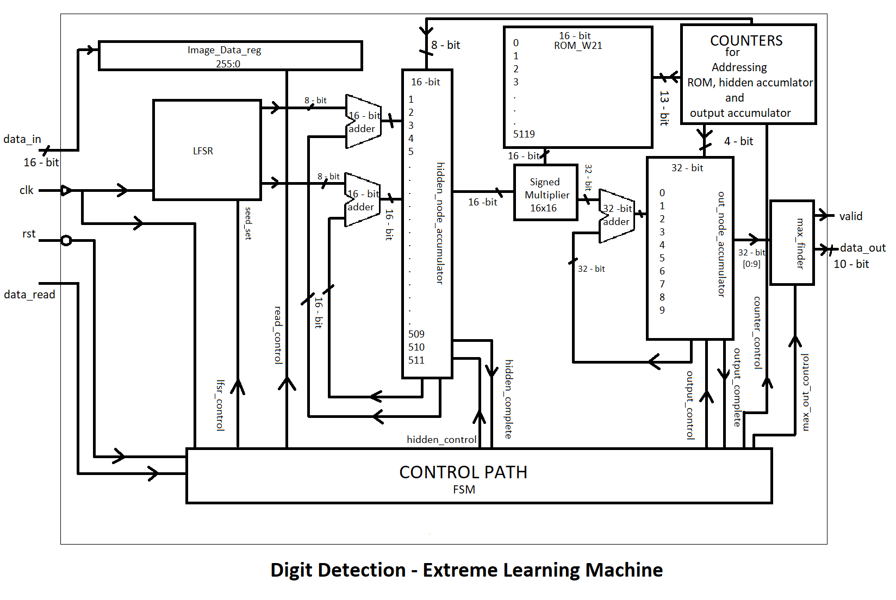
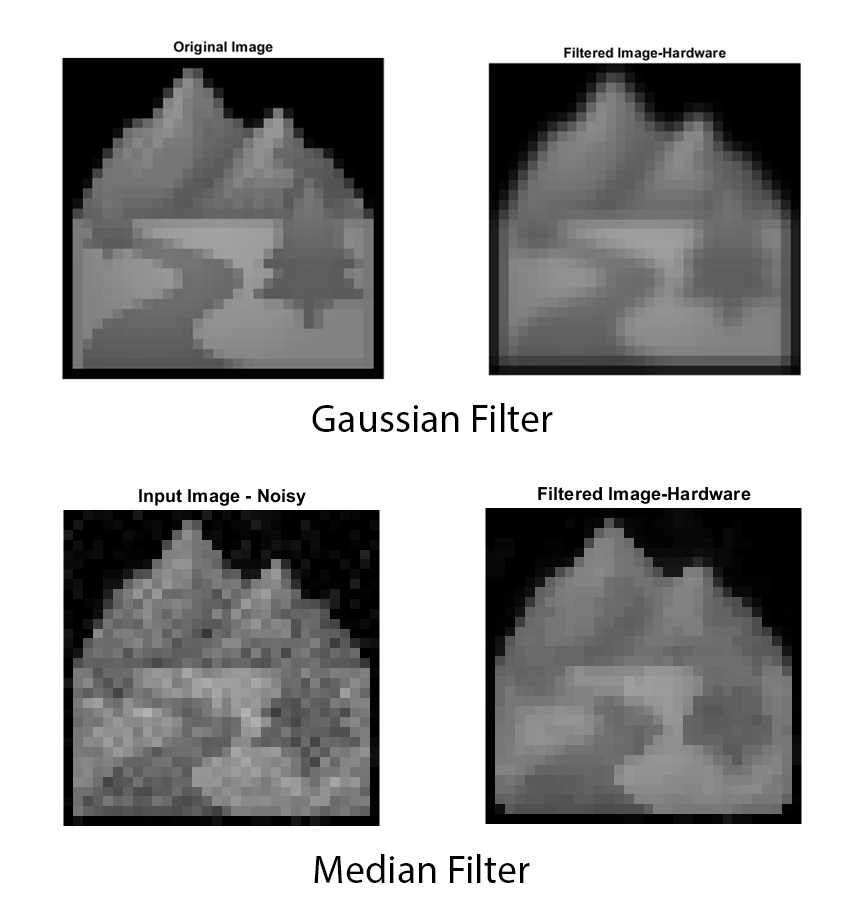
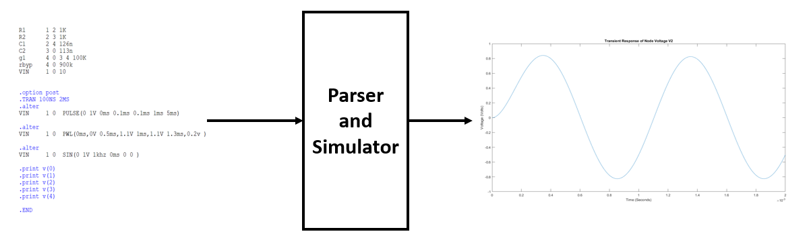
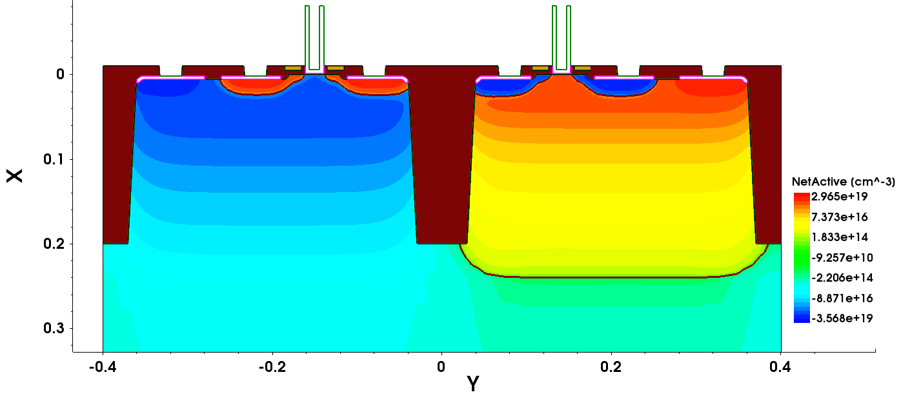
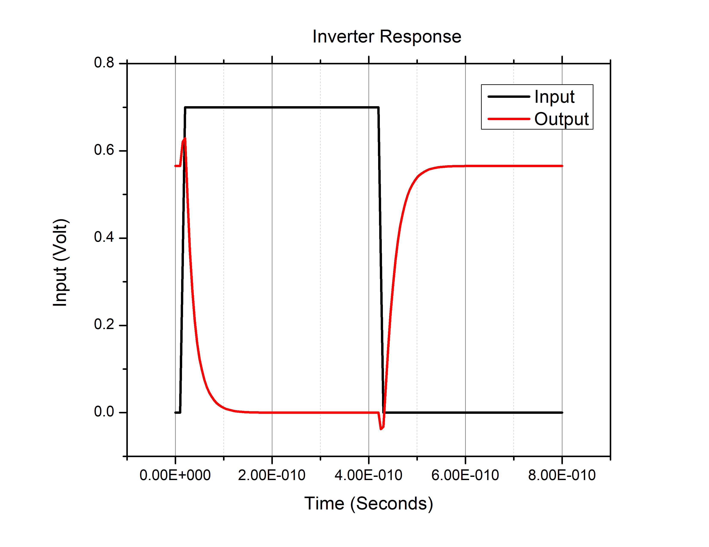
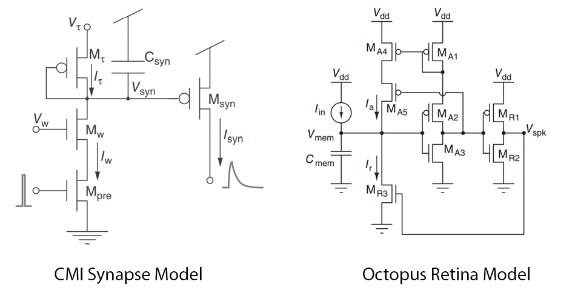
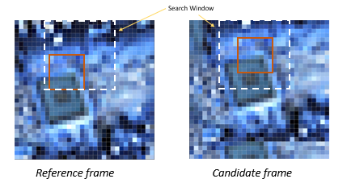

PROJECTS
Handwritten Digits Inference Engine :
- An ASIC is designed and implemented to perform classification of handwritten digits (0 to 9).
- The neural network used is Extreme Learning Machine which is single layered, feedforward and fully connected network.
- Software trainig of model is done on MATLAB and weights are calculated.
- The RTL description of trained model is written using verilog and ASIC flow is performed using gpdk180 library.
- An LFSR is designed and used for generation of random weights for first layer.
- The operating frequency of design is 100MHz.
- Skills : Xilinx Vivado, Verilog, Cadence Design Tools, MATLAB

Multi Cycle Processor :
- A 16-bit RISC style procsser is implemented on Basys3 FPGA board.
- The designed processor is of multi cycle having four stages namely fetch, decode, execute and write-back.
- It supports arithmetic, logical, immediate, load, store and branch instructions.
- Tested the post implemented design by executing assembly language code for sorting of an array using bubble sort algorithm.
- The operating frequency of processor is 50MHz
- Skills : Xilinx Vivado, Verilog

Image Processing Filters :
- Hardware implementation of spatial image filters is perfomed.
- Gaussian and Median are the types of implemented filters.
- Gaussian filter is used for smoothing of input image with hard edges.
- Median filter is usef for denoising of input image with salt and pepper noise.
- The filter operation is performed on 32x32 gray scale image stored in BRAM.
- The design is implemented in Basys3 FPGA board and operated at 100MHz.
- Skills : Xilinx Vivado, VHDL, MATLAB

SPICE Parser and Simulator :
- A program is written in MATLAB for parsing and simulation of given netlist.
- It can parse a netlist containing R, C, G, V elements.
- It can perform dc operating point analysis and transient simulation.
- Tested program for given netlists and compared with LTspice simulation results.
- Skills : SPICE, MATLAB, LTspice

Farbrication and Simulation of CMOS Invereter :

Silicon Neuron and Synapse :

Sum of Absolute Difference Architecture :

Ballon Shooter Game :